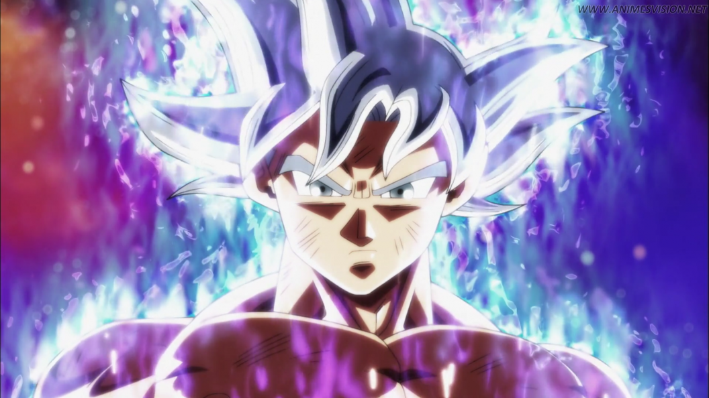
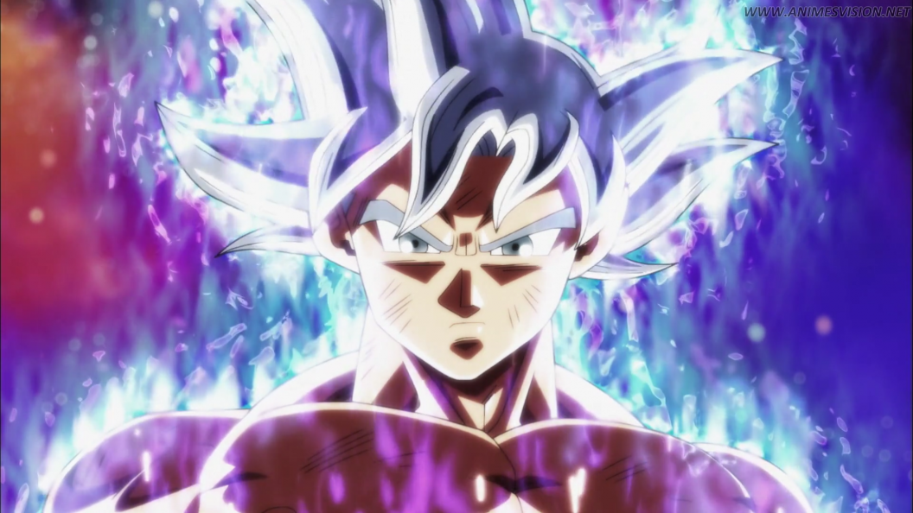
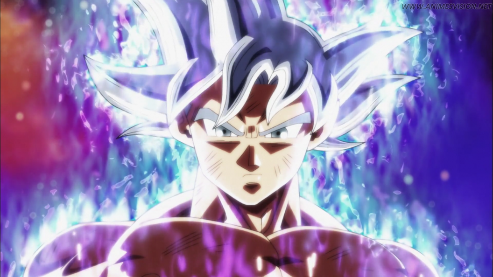

name: kakarot
age:83
occupaiton:fighter

Kakarot or Goku is one of the heroes of the cartoon series Dragon Ball and is the strongest character in the series and has two sons Gohan and Goten and his stubborn friend Vegeta and is present in all parts of the series

Vegeta, one of the heroes of the cartoon series Dragon Ball, is a Saiyan, one of Kakarot's friends and does not want to admit it. He has a son and a daughter, Trunks and Paula, who is the first to go to the planet Beros
Trunks is the son of Vegeta and there are two future and the present and he can turn into a Super Saiyan and the future appeared twice in the arc of Android and Ciel and in the arc of Goku Black
Frieza, one of the villains in Dragon Ball, has six forms, and he is the tastiest enemy of Goku, who is the one who blew up the planet Vegeta and killed Goku and Vegeta's parents, and Goku and Vegeta took revenge on him when he grew up